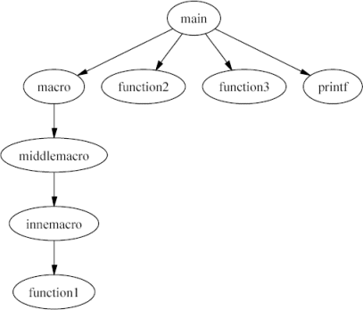

Last change: Monday, November 17, 2008 11:34 am
Last change: Monday, November 17, 2008 11:34 am
Unless otherwise expressly stated, all original material on this page created by Diomidis Spinellis is licensed under a Creative Commons Attribution-Share Alike 3.0 Greece License.
First of all, the preprocessor token concatenation feature can result in C identifiers that are composed of multiple CScout identifiers. Consider the following example, which uses a macro to define a number of different functions. (Yes, I am familiar with the C++ templates, this is just an example.)
int_add C identifier is
actually composed of three separate parts:
int _ add int identifier into integer
would change it in five different places: the argument to the four
typefun macro invocations, and the part of int_add.
In addition, preprocessor macro definitions can confuse the notion of the C scope, bringing together scopes that would be considered separate in the context of the C language-proper. Consider the following (slightly contrived) example:
foo is occuring in a number of different
scopes:
foo identifier,
CScout will change all the instances marked below,
in order to obtain a program that has the same meaning as the original
one.
Identifier foo: test.c(Use the tab key to move to each marked element.) struct foo {
|

Note that in CScout functions are separate entities from identifiers. The name of a function can consist of multiple identifiers; an identifier can exist in more than one function names.
For instance,
the page for the _ (underscore) identifier in the
typefun macro example we saw earlier
will appear as follows.
Identifier: _CScout 2.0 - 2004/07/31 12:37:12 |
Note how each function name is composed of three separate parts,
and that this instance of the _ identifier occurs in
8 different function names.
One important feature of CScout concerning files has to do with the handling of files that are exact copies of each other. These may occur in the building of a large system for the sake of convenience; for example, one header file may be copied to various parts of the source code tree. CScout will locate identical files and group them together when reporting a file's details. Identifiers occuring in the same position of two identical files are considered equivalent; if you change the name of one of them the name of the other will also change. Moreover, when CScout reports unused identifiers it takes into account uses of an identifier from all instances of the identical files, not just one of them.
readonly and ro_prefix definitions
provided in workspace definition files)
to determine which elements of the compiled source code are under
your control and which elements are part of the development system.
Often the CScout user-interface allows you to specify whether you are
interested in writable (i.e. your project's), read-only (i.e. the system's)
or all elements.
Therefore,
all of the files that belong to your project must be writable.
Any other files used by your project but not belonging to it
(e.g. header files of third-party libraries or auto-generated code)
must either be read-only or must be flagged for treatment as
read-only using the readonly and ro_prefix
workspace definition commands.
Since CScout is not just a browser, but a refactoring browser,
you are expected to ensure that every file in your project is
writable.
This is how CScout figures out which files are part
of your project and which are system files (for instance the standard
library header files).
System files
should not be writable; if any system files happen to be writable,
use the readonly and ro_prefix workspace
definition commands to tell CScout to treat them as if
they are not writable.
| Contents | « Previous Next (The Web Interface) » |
Last change: Monday, November 17, 2008 11:34 am
Unless otherwise expressly stated, all original material on this page
created by Diomidis Spinellis is licensed under a
Creative Commons Attribution-Share Alike 3.0 Greece License.